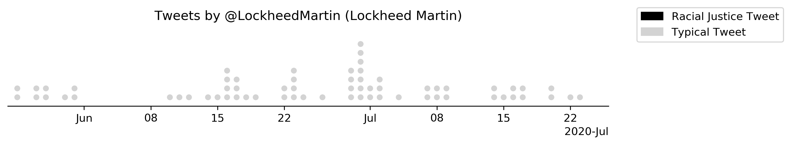

Corporations use Twitter mostly for press releases, advertising, and customer service. But as a consequence of sharing Twitter on equal footing with customers, they have never been more publicly accountable by the forces of social movements, especially Twitter-native movements like Black Lives Matter.
After the death of George Floyd on May 25 and the subsequent protests that peaked the two weekends after his death, any tweet that didn't address arguably the largest protest movement in American history was a faux pas at best, and at worst, implicit support for the status quo. There were significant business implications in "taking a side", and corporations (especially those with government contracts or a conservative customer base) had to decide how they would respond to the moment, if at all.
Under the heat of these unique social pressures, how did the Fortune 100 react? How comfortable were corporations using the phrase "Black Lives Matter"? What sectors were most vocal in their support for the movement? What companies were the first in their sector to support protesters? And what companies decided to tweet as if nothing was happening?
I've compiled and analyzed a dataset of Fortune 100 companies, their Twitter accounts, and collected their tweets from May 25 to July 25, hoping to answer many of these and other fundamental questions about corporate America's relationship with social responsibility, racial justice, and the Black Lives Matter movement.
A few caveats
This report does not focus on the alleged hypocrisy of many of these corporate statements. Report after report in the past few months have shown that many of these companies have made similar statements promising reform in the past, without making the fundamental changes they promise. Instead, this report focuses simply on the immediacy, strategy, and content of each corporation’s response on Twitter, specifically from May 25 to July 25, the two months following the death of George Floyd and the subsequent protests.
Data was only collected and analyzed for 91 of the Fortune 100, since 9 companies (including Apple, Costco, and JPMorgan Chase) do not have active Twitter accounts. Further subtleties surrounding the curation of the dataset, like mapping Twitter handles to corporations, what characterizes a tweet that addresses racial inequity, and limitations of the Twitter data, are explained in detail on the dataset’s webpage.
The quiet corporations
As one might expect, many corporations did not make any public statement about the protests or make charitable donations. But this was a surprisingly small subset of the Fortune 100. Only 6 of the 91 companies did not make any comment, both on and off Twitter:
Lockheed Martin

,
General Dynamics
 ,
Valero Energy
,
Valero Energy
 , Phillips 66
, Phillips 66
 , and Energy Transfer
, and Energy Transfer
 .
.
Ford Motor
 also did not post a press release. Presumably they were attempting to remain neutral, but when mistakenly linked to Black Lives Matter donations, Ford released a statement, clarifying that "Ford is proud to be America’s long-time leader in producing police, emergency and first responder vehicles." In a press release, Ford claims to supply two-thirds of police vehicles. Ford released an internal memo (that was ultimately leaked) when their employees questioned Ford's relationship to police departments. The then-CEO Jim Hackett responded, “The issues plaguing police credibility have nothing to do with the vehicles they’re driving.”
also did not post a press release. Presumably they were attempting to remain neutral, but when mistakenly linked to Black Lives Matter donations, Ford released a statement, clarifying that "Ford is proud to be America’s long-time leader in producing police, emergency and first responder vehicles." In a press release, Ford claims to supply two-thirds of police vehicles. Ford released an internal memo (that was ultimately leaked) when their employees questioned Ford's relationship to police departments. The then-CEO Jim Hackett responded, “The issues plaguing police credibility have nothing to do with the vehicles they’re driving.” 
Of the 91 companies on Twitter, 19 did not tweet about racial inequality. Every Fortune 100 corporation in the aerospace and defense sector did not tweet about the protests, as well as half the energy corporations. This is perhaps not surprising, given that both sectors are dependent on government contracts and regulation, and the government at the time was, if not against the BLM movement, not explicitly supportive.
Oracle was an outlier in the tech sector, as the only tech corporation in the Fortune 100 that did not tweet about the protests. They also did not release a statement.
Perhaps the oddest trend are corporations that made charitable donations to organizations that support racial justice, but didn't mention it, either on Twitter or even through any formal public channel. For example, Northrop Grumman released a statement that they would give $1M and match $1M of their employees' donations. They did not tweet about it. Exxon Mobil joined 30 other companies for the "In this Together" campaign, which collectively raised $1 billion for minority-owned businesses. They didn't release a statement. The WSJ quoted Progressive's CEO, Tricia Griffith, who mentioned that the company pledged $1 million to the Equal Justice Initiative. The WSJ quote is the only mention of it. GE's CEO outlined a plan to increase diversity, including a "$1MM contribution to fund economic inclusion" from the GE Foundation. The GE Foundation, which has its own twitter profile, did not tweet about the effort.
It would be easy to extend a benefit of the doubt to each of these corporations—obviously, being too boastful of one's donations can sometimes be in poor taste. But many of them have not been shy tweeting about their charitable donations in the past, suggesting that the lack of publicity comes not from humility, but from a political calculation.
This trend reveals an odd economic calculus by corporations: donations to racial justice organizations are important to save face internally, but making their donations too public would risk splitting their customer base.
This is best exemplified by Publix, who, despite not tweeting on their main profile about their $1 million donation to the National Urban League, would mention their donation when directly responding to customers who criticized Publix's silence on racial justice. Meanwhile their employees cannot wear "BLM" masks because it is characterized as "non-Publix messaging".
Instead of taking a consistent public stance, some corporations decided to practice a kind of doublethink in hopes of saving their bottom line.
Interest over time
During the two weeks of major protests, corporations tweeted half as frequently, and around a third of those tweets addressed the protests or the death of George Floyd. Over time, as one might expect, corporations felt more comfortable both tweeting more about their products and less about racial justice.
Some corporations decided to make only a few, intentional tweets. These are best exemplified by Disney or Pepsi, who sent out their first statement that condemned racism, a second statement saying they are donating money to a racial justice organization, and then by the end of June tweeting at a normal rate.
Caterpillar tweeted that a donation "would be announced soon". But only by digging through Caterpillar’s press releases would a Twitter user know that two weeks later, they ultimately donated $1 million dollars to the Equal Justice Initiative and NAACP.
This was by far the most popular method of discussing Black Lives Matter on Twitter. More than half of corporations who tweeted about the protests did so in three or fewer tweets.
Meanwhile, there are a few notable exceptions of corporations who either made the movement central to their brand identity or tweeted consistently about what their corporation would do to address inequality. The corporations who tweeted the most were AT&T and Verizon. Both led consistent Twitter campaigns, quoting black employees and highlighting Black-owned businesses.
Other companies like Nike and CocaCola tweeted very little, but when they did tweet, they tweeted about their support of the Black Lives Matter movement.
Response immediacy
The immediacy of the corporate response, especially corporations that explicitly supported Black Lives Matter, is especially important. The movement ended up boosting public support for the Black Lives Matter, but that wasn't clear until late into the protests. Corporations that supported Black Lives Matter early were operating with considerably less information then those waiting until after the protests peaked.
Microsoft's response was the soonest, with their CEO tweeting on May 28 about Microsoft's efforts to reform the criminal justice system. But Nike on May 29 was the first company to address the protest directly with their video “Don’t do it.”
A majority of companies who released statements did so the week following George Floyd’s death, beginning Monday, June 1, though others waited weeks before commenting. Allstate did not tweet for almost a month before sharing their plan to take “a stand on inequality”, promising to “speak up and act.” (They have not tweeted about racial justice since.)
Allstate was similar to other corporations in that they were able to pair their first tweet about racial inequality with Juneteenth. For companies who were hesitant to tweet about Black Lives Matter in early June, Juneteenth offered a second chance to address the moment. Capital One, for example, released a statement about pledging $10 million dollars on June 5 to various racial justice organizations, but decided to not share that press release publicly until weeks later on Juneteenth. Other corporations who seemed to use this strategy were ConocoPhillips, Marathon Petroleum, and Facebook.
Facebook was the last in the tech sector to tweet about racial justice (excluding Oracle, who made no comment). But the corporation was thrown into the racial justice debate early. On May 29, the President incited violence against protestors ("when the looting starts, the shooting starts"). The tweet was removed on Twitter for "glorifying violence", but Facebook CEO Mark Zuckerberg decided not to censor the post, despite repeatedly promising to remove posts by politicians who incite violence. After a week of staff protests, Zuckerberg made a Facebook post on June 5 outlining how Facebook will review its policies. Two weeks later on June 18, Facebook tweeted about its $100 million grant initiative for black-owned businesses.
The "Black Lives Matter" taboo
Twenty-two Fortune 100 corporations used the phrase "Black Lives Matter" between May 25 and July 25. That being said, the #BlackLivesMatter hashtag was surprisingly unpopular, used by only five corporations: Intel, Cisco Systems, and Coca-Cola used the hashtag in tweets, and then Nike and AT&T used it in their twitter profiles.
Dividing by sector, the tech industry said "Black Lives Matter" most often, with five of the ten tech corporations tweeting the political slogan. Four financial firms also participated, but since the financial sector makes up 24 companies of the Fortune 100, it seems proportionally less significant. The remaining are divided among many sectors.
It would be useful to understand these numbers in context, but obtaining a full history of the Fortune 100's relationship to the phrase "Black Lives Matter" on Twitter is not straightforward. Twitter limits the number of tweets a programmer can access, and when searching directly, Twitter cautions "the Search API is not meant to be an exhaustive source of Tweets" because they can't promise that all tweets are indexed.
Regardless, as a rough heuristic, we can use Twitter's "Advanced Search" to look for instances of "#BLM", "BLM", "#BlackLivesMatter", and "Black Lives Matter" for each company's full history prior to May 25, 2020.
Of the 91 Fortune 100 companies on Twitter, across the 8 years since the Black Lives Matter movement started, Twitter only found two tweets, both from Google, one from 2015 and one from 2016. Despite the limitations of Twitter's search engine, it is safe to say that the Fortune 100 was hesitant to tweet "Black Lives Matter" until the summer of 2020.
Despite this trend, it's clear that corporations are still hesitant to adopt the slogan: 49 corporations tweeted about money donated to initiatives for racial equality, whereas only 22 tweeted "Black Lives Matter".
Further research
For any further statistical questions and for documentation that details particular nuances in how the data was collected and processed, please read the documentation for the dataset itself. Again, the dataset can only answer questions specific to the company's actions on Twitter. Making any value judgements (i.e. "company is bad", "company is good") using this data alone would be dishonest.
Are the companies that tweet more necessarily “better”? AT&T tweeted about racial justice more than any other Fortune 100 company, but they're also one of the largest corporate donors to Rep. Tom Cotton, who encouraged military action against Black Lives Matter protestors and has a 6 percent rating from the NAACP. Despite making Black Lives Matter central to their brand identity, Nike still posts poor diversity numbers. Facebook tweeted little about Black Lives Matter, but donated $100 million to support black-owned businesses, an amount that is orders of magnitude larger than their peers’ donations.
We’re only just beginning to see how corporations behave when engaging and addressing their customers in social movements. It’s important that when analyzing this behavior, we remember that a corporation’s influence comes from almost everything but their Twitter platform. A social media campaign may be a rough heuristic to gauge a corporation’s values, but to fully understand corporate America's relationship with racial justice we must not allow tweets and press releases to distract from analyzing the substance, effectiveness, and consistency of corporate initiatives.